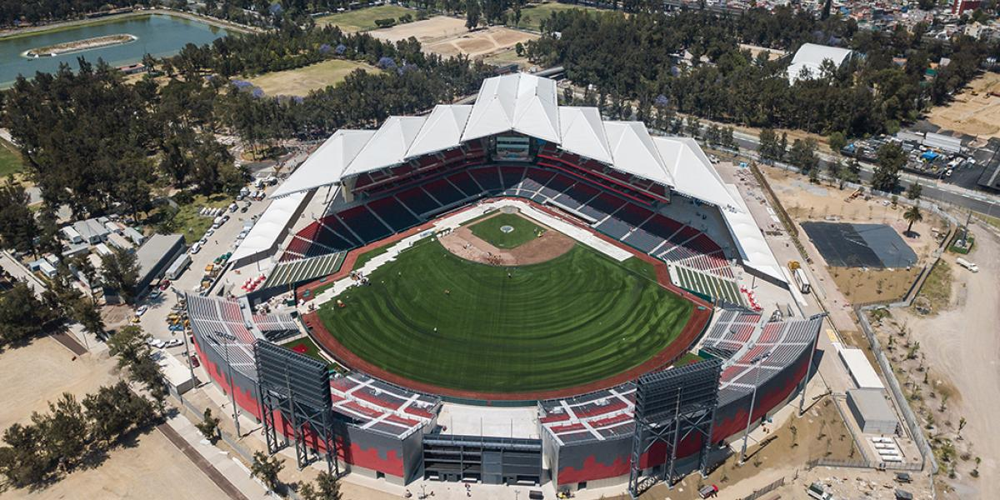
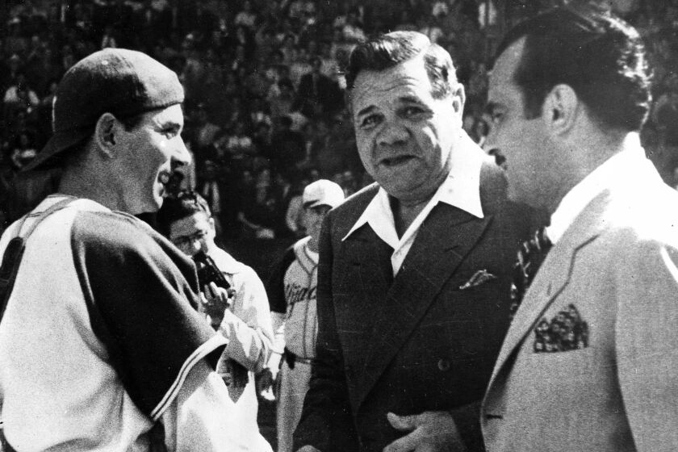

Fundación y Primeros Pasos (1925)
La Liga Mexicana de Béisbol (LMB) fue fundada en 1925 por el periodista Alejandro Aguilar Reyes «Fray Nano» y el mánager Ernesto Carmona. El torneo inaugural contó con seis equipos históricos: 7 de Mayo, México, Agraria, Nacional, Águila de Veracruz y Carmona, marcando el inicio formal del béisbol profesional en el país.

La Era de Jorge Pasquel y la Época de Oro (1940-1950)
Durante la década de 1940, bajo el impulso del empresario Jorge Pasquel, la LMB cobró relevancia internacional al contratar a destacadas figuras de las Ligas Negras y Grandes Ligas de Estados Unidos, como Martín Dihigo, Satchel Paige, Josh Gibson y Roy Campanella, convirtiendo a México en un epicentro del béisbol caribeño.

Afiliación al Béisbol Organizado (1955)
En 1955, la LMB se integró oficialmente al Béisbol Organizado (MiLB) bajo la clasificación Clase AA, ascendiendo posteriormente a la categoría Clase AAA en 1967. Esta alianza consolidó la formación de talentos locales y el flujo constante de peloteros hacia el ámbito internacional.
La LMB en la Actualidad
Con un siglo de tradición deportiva, la liga cuenta actualmente con 20 franquicias divididas en dos zonas (Norte y Sur). La LMB es el circuito veraniego de béisbol profesional más antiguo de México y un pilar fundamental en la identidad deportiva nacional.